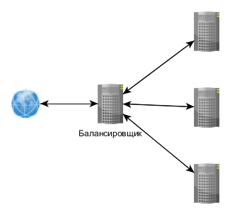
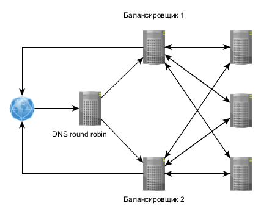
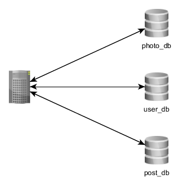
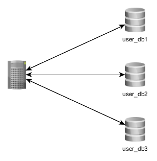
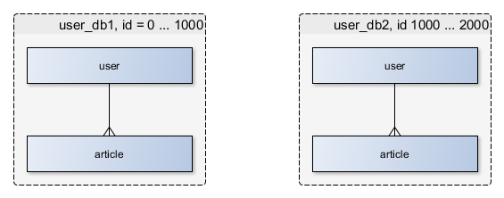
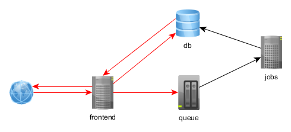

Что такое масштабирование?
Возможность увеличить производительность проекта за минимальное время путём добавления ресурсов.
Способы масштабирования
- Вертикальное. Больше памяти, быстрее диск, лучше процессор в пределах одного сервера.
- Горизонтальное. Больше серверов в кластере.
А оно надо? И так всё работает!
ab
ab -n 100 -c 10 http://example.com/
Concurrency Level: 10
Time taken for tests: 1.889 seconds
Complete requests: 100
Failed requests: 0
Write errors: 0
Total transferred: 1003100 bytes
HTML transferred: 949000 bytes
Requests per second: 52.94 [#/sec] (mean)
Time per request: 188.883 [ms] (mean)
Time per request: 18.888 [ms] (mean, across all concurrent requests)
Transfer rate: 518.62 [Kbytes/sec] received
Connection Times (ms)
min mean[+/-sd] median max
Connect: 57 59 1.7 59 64
Processing: 117 126 7.5 124 162
Waiting: 57 62 7.0 60 98
Total: 175 186 8.0 184 224
Percentage of the requests served within a certain time (ms)
50% 184
66% 186
75% 187
80% 188
90% 192
95% 203
98% 216
99% 224
100% 224 (longest request)
siege
siege -b -c10 -t60S http://example.com/
** SIEGE 2.72
** Preparing 10 concurrent users for battle.
The server is now under siege...
Lifting the server siege... done.
Transactions: 4066 hits
Availability: 100.00 %
Elapsed time: 60.00 secs
Data transferred: 13.73 MB
Response time: 0.22 secs
Transaction rate: 67.77 trans/sec
Throughput: 0.23 MB/sec
Concurrency: 14.95
Successful transactions: 4066
Failed transactions: 0
Longest transaction: 3.28
Бывает, что не надо... пока
- Обновить PHP (+40%)
- OpCache + потюнить (не должно быть misses)
- Добавить индексы в БД, пооптимизировать
- Включить кеш (memcache, Redis)
- Apache → nginx + php-fpm
Далее будут доклады на тему оптимизации
- PostgreSQL, Илья Космодемьянский
- MySQL, Василий Лукьянчиков
Это просто и может дать вам время
Но мы же уже всё сделали?!
Мониторинг
- Выиграйте время
- Настройте мониторинг
- Он покажет, куда и как расти
Повторяйте постоянно.
Что может показать мониторинг
- Упёрлись в диск
- Мало памяти
- Мало процессора
- Сеть не выдерживает
- Всё более-менее, но ошибки валятся
- ...
На что обращать внимание прямо сейчас
- Доступность
- Нехватка ресурсов
- Ошибки
Нотификации
Важно уведомить, но не стоит спамить.
Что анализировать
- RPS
- Response time
- Количество процессов
- Количество потоков
- Размеры очередей
- ...
Будет подробно в докладе Александра Крижановского завтра
Когда?
Нагрузка бывает как запланированная, так и нет:
- Сезонная
- Реклама
- Новости
- Акции
Как бороться с нагрузкой?
Бизнес решает. Важна цена вопроса.
Возможно, это будет дешевле:
- Профайлинг, очевидные оптимизации
- Кеш в memcached
- Правка конфигов сервера
- ...
Если железо дешевле программиста
Типичная схема

Балансировщик + несколько серверов приложения
Что даёт?
- Возможность обработать больше запросов
- Надёжность
Почему PHP так хорош для масштабирования
Share nothing по умолчанию.
То есть слабая связанность для слоя серверов приложений.
Проблемы
- Как выбрать сервер?
- Как хранить сессии?
Выбор сервера
- По очереди из списка (round-robin)
- География IP
- Статистика (least-connected, доступность)
- Как-то ещё
А что если упрёмся в балансировщик?

Сессии
- По умолчанию в файлах
- NFS?
- БД?
- Нельзя писать в кеш, если данные в сессии важны
- Можно поместить в общее отдельное хранилище
- Redis однопоточный
- По Redis на каждом инстансе, sticky-сессии (ip-hash)
Не пишите своего аналога сессий, используйте PHP!
Закрывайте сессии
session_write_close();
Файлы
- Специализированное решение
- «Шардирование» средствами PHP
Специализированные решения
Замечания
- Не хранить в базе!
- Можно хранить локальный кеш. Например, для роутинга запросов.
База данных
- Репликация master-slave
- Репликация master-master
- Репликация руками
- Шардирование
- Партицирование (расскажет Денис Иванов далее)
Зачем?
- Читаем больше, чем пишем? Будет быстрее.
- Отказоустойчивость.
- Бэкапы (реплику можно остановить).
- Тяжёлые вычисления (о статистике далее).
read/write split
- 2 пула серверов: master, slave
- Соединение по требованию
- Логика выбора соединения варьируется...
Логика
- Писать всегда в master
- Только чтение с slave (
array_rand())
- Чтение для записи - ...
Засада... репликация лагает
Иногда данные попадают с master на slave с задержкой.
Для MySQL:
mysql -e "SHOW SLAVE STATUS;" | grep Seconds_Behind_Master
PostgreSQL:
select now() - pg_last_xact_replay_timestamp() AS replication_delay;
- 0 = OK. Читаем с slave.
- Больше 0 = ждём или читаем с master.
- NULL = ещё не реплицировали (логи!). Читаем с master.
Причины
- Медленная сеть.
- Не справляется реплика.
- Слишком много слейвов (>20 на мастер).
Зачем?
- Отказоустойчивость.
- Может быть быстрее.
Логика
Выбираем рандомное соединение.
Минусы
- Лаг репликации выше.
- Поломка = потеря данных. Поломка реплицируется.
- Может забить сеть.
О репликации в MySQL сегодня расскажет Андрей Аксенов
Репликация руками
Всегда можно сделать это руками.
Шардирование
Размазывание данных по нескольким серверам.
Отдельные таблицы

Отдельные соединения. WHERE IN вместо JOIN.
Часть одних и тех же данных

Как выбрать сервер?
$connectionID = 'user_db' . ($user_id % 3 + 1);
где 3 - количество серверов. Альтернаива - map в key-value хранилище.
Попроще
Попробовать разделить на части, которые используются вместе, но не пересекаются.

Надо знать ID пользователя, но легко выбрать все его посты, посортировать и т.д.
Посложнее
Не удаётся сгруппировать данные.
Надо знать ID данных, чтобы их достать. Никаких JOIN, ORDER и т.д.
Таблица используется как key-value.
Обычные задачи становятся необычными
- Выбрать TOP 10.
- Постраничная разбивка.
- Выбрать с наименьшей стоимостью.
- Выбрать посты юзера X.
А правильно ли мы выбрали хранилище...
Подробно о шардировании сегодня будет в докладе Дениса Иванова
Как быть со статистикой?
Считать статистику по основным данным - ошибка.
- Скорее всего вам не нужен realtime.
- Не считайте статистику на основной базе.
- Специальный slave.
- OLAP
- Или что-то готовое...
Фоновая обработка

Всё, что не критично сделать прямо сейчас, можно обработать в фоне.
Зачем?
- Быстрее ответ сервера
- Можно размазать нагрузку
- Можно обработать на другом сервере
- Можно обработать не PHP
- ...
Подробно будет сегодня в докладе Константина Осипова
Меньше связанности!
Чем меньше связанности, тем проще менять одно решение на другое.
Связанность?
- В коде (SOLID, GRASP)
- В доменном слое
- В архитектуре в целом
SOA
- Система бьётся на отдельные логические части
- Части взаимодействуют через интерфейсы
Доменный слой
- Сверхважно отделить его от контекста, в котором он выполняется
- Что происходит в самом слое не так важно, но лучше делать это правильно
Про доменный слой
- Domain-Driven Design: Tackling Complexity in the Heart of Software, Eric Evans
- Implementing Domain-Driven Design, Implementing Domain-Driven Design
- BoundedContext и DDD в общем
В архитектуре
- share nothing
- логика на стороне приложения
- низкая связанность
Не стоит недооценивать браузерную оптимизацию
Абстракция и дробление совсем не бесплатны.